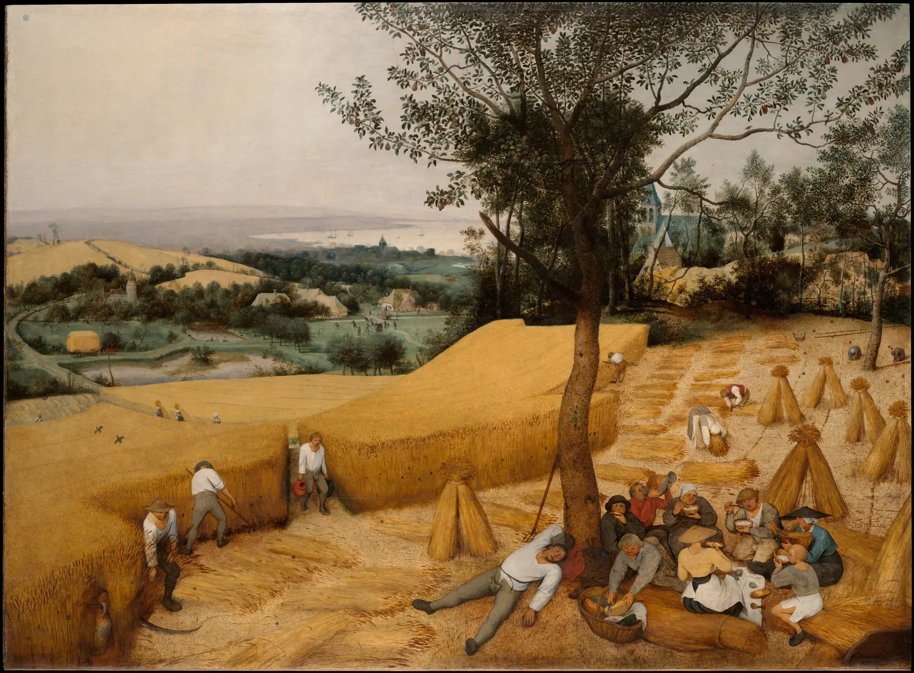
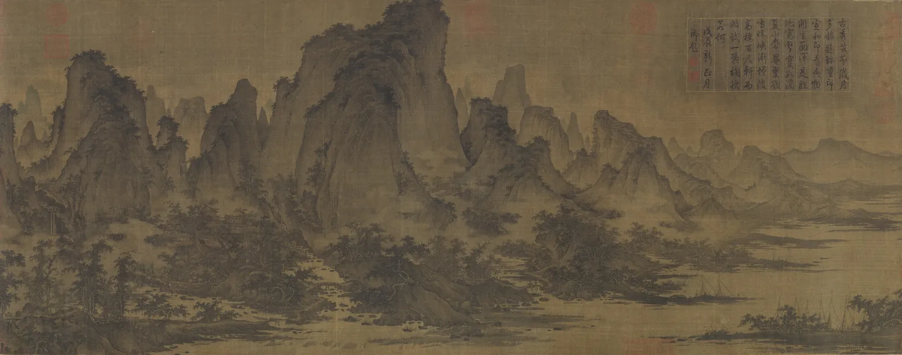

명작의 구도 읽기
미술관에서 사람들이 그림 한 점 앞에 머무는 시간은 길지 않다. 몇 초 보고 설명판을 읽고 다음 그림으로 간다. 그 몇 초 동안 눈은 이미 많은 일을 한다. 어디가 밝고 어두운지, 무엇이 무거운지, 어느 쪽으로 기울었는지, 어디서 시작해 어디로 가는지. 이 장은 그 일을 천천히, 하나씩 떼어서 해 본다. 열두 장 동안 배운 도구를 공공 도메인 명작 다섯 점 위에 레이어로 얹고, 무엇이 보이고 무엇이 끼워 맞춘 것인지 가른다. 그리고 한 시점에서 창밖을 보듯 짠 서양의 화면과, 펼치며 걸어 들어가는 동아시아 두루마리의 화면이 얼마나 다른 약속 위에 서 있는지 본다.
- 작품을 덩어리 → 무게 → 선 → 시선 → 격자의 순서로 읽고, 각 레이어가 무엇을 보여 주고 무엇을 못 보여 주는지 안다.
- 시각적 무게중심을 눈으로 추측한 뒤 단순 모형과 비교하며, 균형이 기하 중심과 다르다는 것을 확인한다.
- 그림 위에 그은 구도선이 실제 경계와 얼마나 맞는지 재고, 사후에 끼워 맞춘 선과 구별한다.
- 시선 경로 모형과 시선 추적 연구의 한계를 알고, 경로를 "가설"로 다룬다.
- 자유롭게 움직이는 격자는 거의 무엇에든 맞는다는 것을 직접 보고, 황금비 주장의 근거 수준을 판단한다.
- 한 시점의 서양 회화와 두루마리·족자의 움직이는 시점을 비교하고, 각 화면이 무엇을 전하려 하는지 말한다.
그림 앞의 몇 초
구도를 "읽는다"는 말은 조금 이상하게 들린다. 그림은 글이 아니니까. 그러나 이 책의 앞 장들을 지나 왔다면 이미 읽는 법을 알고 있다. 흑백으로 보면 덩어리가 보이고(3장, ColorBook 6장), 덩어리에는 무게가 있고(7장), 경계와 방향은 선이 되고(2장), 눈은 그 선과 대비를 따라 움직이며(5장), 그 모든 배치를 격자에 대 볼 수 있다(9장). 이 장은 이 다섯 가지를 차례로 쌓는다. 순서가 중요하다. 큰 것에서 작은 것으로, 확실한 것에서 해석이 필요한 것으로 간다.
이 장에서 읽을 작품은 다섯 점이다. 모두 메트로폴리탄 미술관이 공공 도메인으로 공개한 작품이다. 두 점은 16~17세기 유럽 회화, 세 점은 동아시아 그림이다. 동아시아 세 점은 각각 다른 판형이다. 옆으로 펼쳐 보는 두루마리, 벽에 걸어 위아래로 보는 족자, 그리고 손에 들고 보는 목판화.
| 작품 | 판형 | 이 장에서 볼 것 | 출처 |
|---|---|---|---|
| 피터르 브뤼헐, 「추수하는 사람들」, 1565 | 참나무 판에 유채, 가로로 긴 화면 | 대각선 밀밭 덩어리, 깊이로 이끄는 길 | The Met · 크레딧 |
| 요하네스 페르메이르, 「물병을 든 젊은 여인」, 1662년경 | 캔버스에 유채, 거의 정사각형 | 직사각형 틀들, 한쪽에서 오는 빛, 무게의 균형 | The Met · 크레딧 |
| 전(傳) 굴정, 「하산도(여름 산)」, 1050년경, 중국 북송 | 두루마리(수권), 비단에 먹과 옅은 채색, 45.4 × 115.3 cm | 펼치며 보는 화면, 움직이는 시점 | The Met · 크레딧 |
| 작가 미상, 「평사낙안」, 15세기 말~16세기 초, 조선 | 족자, 비단에 먹 | 세로 화면의 여백, 지그재그로 물러나는 물가 | The Met · 크레딧 |
| 가쓰시카 호쿠사이, 「가나가와 앞바다의 파도 아래」, 1830–32년경 | 목판화, 종이에 먹과 채색 | 큰 곡선과 작은 삼각형, 읽는 방향 논쟁 | The Met · 크레딧 |
모든 작품 이미지는 공공 도메인(The Met Open Access, CC0)이고, 그 위에 얹는 분석 레이어는 이 책이 그린 것이다. 시뮬레이터는 이미지를 긴 변 220 px로 줄여 분석한다. 작은 세부가 아니라 큰 배치를 읽기에 충분한 크기다.
덩어리부터: 흑백으로 읽기
첫 레이어는 명도 덩어리(Value masses)다. 화면을 세부 없이 밝음·중간·어둠 두세 가지 모양으로만 남긴 것으로, ColorBook에서 노탄(Notan)이라 부른 그것이다. 구도 읽기를 덩어리부터 하는 이유는 단순하다. 멀리서, 또는 처음 1초에 보이는 것이 이것이기 때문이다. 세부와 색은 그다음에 온다.

아래 시뮬레이터에서 작품을 고르고 경계선을 좌우로 끌어 원본과 덩어리를 비교한다. "흐림"은 눈을 가늘게 뜨는 정도, "단계"는 명도를 몇 묶음으로 나눌지다. 흐림을 올리면 세부가 녹고 큰 모양만 남는다.
덩어리 레이어: 원본과 노탄
덩어리 레이어가 알려 주는 첫 번째 사실은 "명작이라고 덩어리가 고르게 나뉘지 않는다"는 것이다. 브뤼헐의 화면은 중간 명도가 가장 넓고, 어둠은 나무와 그늘을 따라 오른쪽 아래로 몰려 있다. 그 몰림이 곧 그림의 무게다. 호쿠사이는 반대로 밝음이 64%를 차지하고, 짙은 파도가 그 위에 큰 곡선을 긋는다. 두 번째 사실은 동아시아의 비단 그림이 명도 폭을 아주 좁게 쓴다는 것이다. 이것은 세월에 비단이 누렇게 바랜 탓도 있지만, 처음부터 먹의 농담이라는 좁은 사다리 안에서 화면을 짠 그림이라는 뜻이기도 하다. 좁은 폭에서는 덩어리 사이의 작은 차이가 큰 일을 한다.
무게와 균형: 눈의 추측과 모형
7장에서 시각적 무게(Visual weight)는 크기, 명도 대비, 채도, 위치, 고립에 따라 달라진다고 했다. 그림 전체의 무게가 모이는 점, 곧 시각적 무게중심(Visual center of weight)은 손가락 하나로 그림을 받쳐 든다고 상상할 때 손가락을 두어야 할 자리다. 미술 심리학자 루돌프 아른하임(Rudolf Arnheim)은 『미술과 시지각』(Art and Visual Perception, 1954)에서 화면의 균형을 이런 힘들의 평형으로 설명했다. 그는 이것을 측정값이 아니라 지각의 구조로 다뤘다.
이 책은 그 직관을 아주 단순한 모형으로 계산해 본다. 화소마다 "둘레와 명도가 얼마나 다른가"와 "둘레와 채도가 얼마나 다른가"를 재고, 각각 제곱해 더한 값을 무게로 삼는다. 넓고 고른 하늘이나 벽은 둘레와 같아서 가볍고, 둘레와 다른 덩어리일수록 무겁다. 제곱은 강한 대비에 더 큰 몫을 준다. 그다음 무게로 가중한 평균 위치를 구한다.
먼저 눈으로 맞혀 본다. 파란 손잡이를 이 그림이 "받쳐질 것 같은" 자리로 끈 뒤, "모형의 답 보기"를 켠다.
무게중심 맞히기
이 책의 모델로 계산하면 다섯 작품의 무게중심은 모두 기하 중심에서 대각선 길이의 8% 안에 있다. 브뤼헐(3.1%)과 굴정(1.9%)은 거의 가운데, 페르메이르(5.3%)는 조금 아래, 평사낙안(5.5%)과 호쿠사이(7.5%)는 아래로 더 내려간다. 가운데에 가깝다고 무게가 없는 화면이라는 뜻은 아니다. 브뤼헐에서는 오른쪽 아래의 짙은 그늘과 사람들, 왼쪽의 촘촘한 먼 풍경과 밝은 하늘이 7장의 지렛대 양쪽에서 맞서며 버틴다. 반면 평사낙안과 호쿠사이는 무게를 아래에 내려놓고 위를 비운 화면이다. 그 벗어남이 그림의 "기울기"이고, 정확한 평형일 필요는 없다. 다만 넓은 면적을 평균하는 모형은 원래 가운데 쪽으로 끌리는 성질이 있으니, 작은 차이를 크게 해석하지 않는다.
모형이 놓치는 것도 분명하다. 페르메이르의 여인 얼굴은 화면에서 아주 작지만, 사람은 얼굴을 먼저, 오래 본다. 이 모형은 얼굴을 모른다. 글자도 모른다. 그림 속 글씨와 도장이 있는 동아시아 그림에서 이 차이가 커진다. 숫자는 대화를 시작하는 데 쓰고, 끝내는 데 쓰지 않는다.
주된 선: 그은 선은 그림에 있는가
구도 해설에서 가장 흔한 그림은 작품 위에 그은 몇 개의 선이다. 대각선, 삼각형, S자 곡선. 이런 선은 두 종류다. 하나는 그림 속에 실제로 있는 경계선(Edge), 곧 밝기가 크게 바뀌는 자리를 이은 선이다. 다른 하나는 그림 속에 없지만 시선이나 방향을 요약한 함축선(Implied line)이다. 인물의 시선, 늘어선 물건의 방향, 손짓이 만드는 선이 여기에 속한다(4장의 연속). 둘 다 쓸모가 있지만, 후자는 얼마든지 그럴듯하게 그을 수 있다는 점이 문제다.
아래에서 두 손잡이로 선 하나를 긋는다. 시뮬레이터는 그 선을 따라 실제 경계가 얼마나 있는지(선과 같은 방향의 밝기 변화가 얼마나 센지)를 재서 그림 평균과 비교한다. "기계가 찾은 경계선"을 켜면 직선 경계를 찾는 고전적인 방법(허프 변환)으로 가장 강한 직선 셋을 보여 준다.
구도선 긋기: 경계선인가, 함축선인가
기계가 찾은 직선은 대개 수평선, 창틀, 밀밭 가장자리처럼 "곧고 긴 경계"다. 사람이 구도선으로 긋는 선과 겹칠 때도 있고 아닐 때도 있다. 호쿠사이의 큰 파도처럼 곡선으로 짠 그림에서는 직선 찾기가 거의 쓸모없다. 반대로 사람이 긋는 함축선은 기계가 찾지 못한다. 둘을 함께 보면 그림의 뼈대가 "실제로 그려진 선"과 "보는 사람이 이어 붙인 선"으로 갈린다.
시선 경로: 모형과 실제 눈
5장에서 본 것처럼 눈은 화면을 매끄럽게 훑지 않는다. 한 점에 잠깐 머물렀다가(고정(Fixation)) 다른 점으로 튄다(도약(Saccade)). 구도 해설이 그리는 "시선 경로"는 이 고정점들의 순서를 상상한 것이다. 상상이 아니라 계산으로 해 볼 수 있을까.
계산 신경과학자 로랑 이티(Laurent Itti), 크리스토프 코흐(Christof Koch), 에른스트 니부어(Ernst Niebur)는 1998년 논문에서 화면의 각 자리가 둘레와 얼마나 다른지(밝기, 색, 방향)를 모아 현저성 지도(Saliency map)를 만들고, 가장 현저한 곳부터 차례로 "보고" 본 곳은 잠시 억제하는 모형을 제안했다. 아래 시뮬레이터는 그 생각을 밝기와 채도 두 가지로 줄인 교육용 판이다.
시선 경로 모형: 현저성과 억제
모형의 경로는 그럴듯할 때도 있고 엉뚱할 때도 있다. 브뤼헐에서는 그늘의 사람들을 2, 3번째로 고른다. 사람이라서가 아니라 흰 옷과 짙은 그늘이 맞닿아 대비가 크기 때문이다. 페르메이르에서는 첫 고정점이 탁자 위의 반짝이는 대야와 물병이고, 다섯 번 안에 여인의 얼굴을 고르지 않는다. 실제 사람은 얼굴을 먼저, 오래 볼 가능성이 크다. 엉뚱한 결과의 대부분은 모형이 의미를 모르기 때문이다.
격자 대 보기: 맞는 것과 맞춘 것
마지막 레이어는 격자다. 9장에서 3분할과 황금비 격자는 쓸모 있는 점검 도구이지만 "명작은 황금비로 그려졌다"는 주장의 대부분은 근거가 약하다고 했다. 수학자 조지 마코스키(George Markowsky)가 1992년 논문 「황금비에 대한 오해」(Misconceptions about the Golden Ratio)에서 파르테논과 여러 작품에 대한 황금비 주장을 검토하며 지적한 것이 바로 이 지점이다. 측정할 점과 선을 고르는 자유가 크면, 원하는 비율은 거의 언제나 찾을 수 있다.
그 자유가 얼마나 큰지 직접 본다. 시뮬레이터는 현저성 모형이 고른 네 점(분홍)이 가장 가까운 격자선에서 얼마나 떨어져 있는지 잰다. "주요 요소가 3분할선 위에 있다"는 흔한 해설을 그대로 재는 방식이다. 처음에는 격자가 그림 테두리에 고정되어 있다. "테두리에 고정"을 끄면 격자 틀을 끌어 옮기고, 오른쪽 아래 손잡이로 크기를 바꿀 수 있다. "자동으로 맞추기"는 네 점에 가장 잘 맞는 틀을 찾는다.
격자는 무엇에든 맞는다
창문과 두루마리: 서로 다른 화면의 약속
지금까지는 다섯 작품을 같은 도구로 읽었다. 그런데 이 도구들은 대부분 "한 장의 사각형을 한 자리에서 한눈에 본다"는 약속을 깔고 있다. 르네상스 이후 유럽 회화의 큰 흐름은 그림을 하나의 창문처럼 다뤘다. 화가의 눈은 한 점에 고정되고, 화면은 그 눈에서 본 장면을 자른 단면이다(6장). 테두리는 창틀이고, 3분할이나 무게중심 같은 말도 그 창틀을 기준으로 한다.
동아시아의 두루마리와 족자는 다른 약속 위에 있다. 옆으로 긴 두루마리(Handscroll, 手卷)는 탁자 위에서 오른쪽부터 어깨 폭 정도씩 펼치고, 본 부분은 감으며 왼쪽으로 나아간다. 한 번에 전체를 보는 그림이 아니라 시간을 두고 걸어 들어가는 그림이다. 세로로 긴 족자(Hanging scroll, 掛軸)는 벽에 걸고 아래에서 위로, 가까운 물가에서 먼 산으로 시선을 올린다. 북송의 화가 곽희(郭熙, Guo Xi)의 화론을 모은 『임천고치』(林泉高致)는 산을 보는 세 가지 시점, 곧 산 아래에서 올려다보는 고원(高遠), 앞산에서 뒤쪽을 들여다보는 심원(深遠), 가까운 산에서 먼 산을 바라보는 평원(平遠)을 말한다. 한 화면 안에 여러 시점이 함께 있어도 된다는 생각이다. 삼원법을 그리는 방법은 DrawingBook에서 다룬다.

이 화면을 창문의 도구로 재면 어떻게 될까. 아래 시뮬레이터는 두루마리를 실제로 보듯 오른쪽부터 일부만 펼친다. 펼친 부분의 바깥은 감긴 것으로 가린다. 수묵 두루마리에서 무게는 대체로 먹이 진 곳에 있으므로, 이 시뮬레이터는 바탕(비단)보다 얼마나 어두운지, 곧 먹의 양으로 무게를 잰다. 아래 그래프는 펼친 자리마다 화면에 들어온 먹의 양이다. 분홍 점은 펼친 구간 안에서 먹이 모인 중심이다. "한눈에 전체"로 바꾸면 창문처럼 전체를 한꺼번에 놓고 잰 값이 나온다.
두루마리 펼치기: 시간 속의 구도
두루마리에서 "구도"는 한 장의 배치가 아니라 펼치는 동안 이어지는 배치의 흐름이다. 가벼운 물가에서 시작해 무거운 산으로 쌓아 올리고 다시 풀어 주는 것은 음악의 악절과 닮았다(8장의 리듬). 족자도 비슷하게 읽는다. 아래 종합 시뮬레이터에서 평사낙안을 고르면 화면 아래쪽의 물가와 나무, 가운데의 비어 있는 물, 위쪽의 먼 산과 글씨가 층층이 쌓인 것이 보인다. 무게는 아래에 있고, 위쪽 넓은 부분은 비단의 빈 바탕이 차지한다. 10장에서 본 여백이 여기서는 물과 안개, 하늘이 된다.
| 창문형 화면(브뤼헐, 페르메이르) | 두루마리·족자(굴정, 평사낙안) | |
|---|---|---|
| 시점 | 한 점에 고정. 평행선이 소실점으로 모인다 | 여럿, 움직인다. 고원·심원·평원이 한 화면에 |
| 보는 방식 | 한눈에 전체, 테두리 안에서 시선이 돈다 | 펼치며(오른쪽 → 왼쪽) 또는 올려다보며(아래 → 위), 시간을 두고 |
| 테두리 | 세계를 자르는 창틀. 가장자리의 긴장이 중요하다(11장) | 지금 보는 부분의 끝. 두루마리는 펼친 폭이 테두리가 된다 |
| 빈 곳 | 칠한 하늘·벽. 비어도 물감이 있다 | 칠하지 않은 비단·종이. 물, 안개, 하늘로 읽힌다 |
| 글씨와 도장 | 대개 화면 밖(서명은 작게) | 화면 안의 요소. 후대 감상자의 글과 도장도 쌓인다 |
| 격자 대 보기 | 테두리를 기준으로 할 수 있다 | 두루마리는 기준 테두리가 없다. 족자는 세로 위계로 읽는 편이 낫다 |
표는 경향을 정리한 것이지 규칙이 아니다. 브뤼헐의 넓은 풍경은 높은 곳에서 멀리 내려다보는 시점을 쓰는데, 이것은 고정된 한 점이라기보다 여러 곳을 차례로 보여 주려는 화면에 가깝다는 해석도 있다. 반대로 호쿠사이의 판화는 동아시아 그림이지만 수평선을 낮게 두고 먼 후지산을 작게 그려, 유럽 판화의 원근법을 받아들였다는 평가를 받는다. 두 전통은 오래전부터 서로 영향을 주고받았다.
명작 읽기 판: 레이어를 겹쳐 보기
이제 다섯 레이어를 한 화면에 모은다. 작품을 고르고 레이어를 하나씩 켜고 끄며 읽는다. 아래 메모는 이 책이 그 작품을 읽은 한 가지 방식이다. 레이어가 메모와 맞는지, 어디서 어긋나는지 직접 확인한다. "좌우 뒤집기"는 읽는 방향에 대한 오래된 주장을 시험해 보는 도구다.
명작 읽기 판: 다섯 레이어
레이어를 다 켜면 화면이 선과 점으로 어지러워진다. 실제로 그림을 읽을 때도 그렇다. 모든 것을 한꺼번에 보려 하면 아무것도 안 보인다. 한 번에 한 레이어, 한 질문. 그리고 마지막에는 레이어를 모두 끄고 그림만 다시 본다. 처음 볼 때와 무엇이 달라졌는지가 이 장에서 얻는 것이다.
뒤집기에 대해 조금 더. 왼쪽에서 오른쪽으로 글을 읽는 사람은 화면도 왼쪽에서 오른쪽으로 읽는다는 주장, 그래서 오른쪽에서 왼쪽으로 글을 읽던 시대의 일본 판화는 반대로 읽어야 한다는 주장이 있다. 호쿠사이의 파도를 오른쪽에서 왼쪽으로 읽으면 배들이 파도 쪽으로 다가가는 장면이 된다는 해설이 대표적이다. 흥미로운 해석이지만, 읽기 방향이 그림의 시선 순서를 정한다는 연구 결과는 과제와 그림에 따라 엇갈린다. 이 책은 이것을 "생각해 볼 만한 해석"으로 소개하고, 사실로 쓰지 않는다.
서윤의 작업 노트
모작이 아니라 원리 하나씩
낭독회 포스터를 인쇄소에 넘긴 다음 주말, 서윤은 겨울 연작 두 점 「눈 오는 골목」과 「창가의 귤」의 밑그림에서 막혀 있었다. 한도경은 화집 대신 노트북을 열자고 했다. "네가 만든 그 레이어로 보자. 단, 베끼지 말고 하나씩만 가져오는 거야." 두 사람은 이 장의 다섯 작품 중 서양 회화 두 점(브뤼헐, 페르메이르)과 동아시아 족자·두루마리 두 점(평사낙안, 굴정)을 골랐다.
먼저 페르메이르. 서윤은 무게중심을 여인의 얼굴 근처로 짐작했는데, 모형의 답은 가로 52%, 세로 57%, 허리와 대야 사이였다. 얼굴은 작고, 모형은 얼굴을 모른다. 무게는 촘촘한 탁자보와 창의 테두리, 두건의 경계가 나눠 지고 있었다. 도경은 숫자보다 경계 방향 비율(수평 27%, 수직 39%, 사선 34%. 다섯 작품 중 사선이 가장 적다)을 더 오래 봤다. "창틀, 지도, 탁자. 직사각형이 사람을 사방에서 붙들고 있어. 「창가의 귤」의 창틀이 바로 그 일을 할 수 있어." 서윤은 귤을 창틀 사각형 안의 한 점으로 놓되, 귤 하나만 채도가 높고 나머지는 회색에 가깝게 누르는 쪽을 택했다. 채도 비중 k를 바꾸면 무게중심이 얼마나 움직이는지 본 뒤였다.
브뤼헐에서는 서윤이 누워 자는 사람에서 먼 바다로 이어지는 대각선을 그었다. 경계 세기는 ×0.97로 평균과 같았다. 밀밭 윗가장자리에 대 보면 ×2.5 안팎이었다. "앞의 것은 네가 읽은 선이고, 뒤의 것은 그림에 있는 선이지." 서윤은 「눈 오는 골목」에서 길이 화면 깊숙이 사라지는 방향을 함축선으로만 두지 않고 실제 경계(눈 덮인 담의 윗선)로 그려 넣기로 했다.
평사낙안 앞에서 두 사람은 오래 말이 없었다. 덩어리 레이어로 보면 짙은 먹은 화면 아래쪽에 몰려 있고, 모형의 세로 무게중심은 56%로 가운데보다 아래다. 위쪽은 비단의 빈 바탕이다. 물가는 아래에서 위로 지그재그를 그리며 물러난다. 서윤은 10장에서 「눈 오는 골목」의 하늘을 비워 두기로 한 결정을 다시 꺼냈다. "하늘만 비우는 게 아니라, 골목이 지그재그로 꺾이며 그 빈 곳으로 들어가게 하면 어떨까." 굴정의 두루마리에서는 원리 대신 질문 하나를 얻었다. 연작 두 점을 나란히 걸면 왼쪽에서 오른쪽으로 볼까, 오른쪽에서 왼쪽으로 볼까. 도경은 "그건 14장에서 실험실에 같이 넣어 보자"고 했다. 격자는 이번에도 대 보기만 했다. 테두리에 고정한 3분할 격자에서 평사낙안(1.9%)과 호쿠사이(2.7%)의 시선 모형 점들은 무작위 기댓값보다 격자선에 가까웠고, 브뤼헐(7.1%)과 페르메이르(6.5%)는 더 멀었다. 도경은 "맞는 그림도 안 맞는 그림도 다 좋은 그림이네" 하고 노트북을 덮었다.
핵심 정리
- 구도는 덩어리 → 무게 → 선 → 시선 → 격자 순서로 읽는다. 앞의 레이어일수록 측정에 가깝고, 뒤로 갈수록 해석과 기대가 끼어든다.
- 명도 덩어리는 처음 1초에 보이는 화면이다. 명작도 덩어리를 고르게 나누지 않는다. 동아시아 비단 그림은 좁은 명도 폭 안에서 덩어리를 나눈다.
- 시각적 무게중심은 기하 중심과 다르고, 그 벗어남이 화면의 기울기다. 단순 모형은 명도 대비와 채도는 알지만 얼굴, 글자, 의미는 모른다.
- 그림 위의 구도선은 실제 경계선과 보는 사람이 이은 함축선으로 나뉜다. 둘 다 쓸모 있지만 함축선은 가설이라고 밝힌다.
- 시선 경로 모형(현저성 + 억제)은 대비가 시선을 끄는 방식을 보여 줄 뿐이다. 실제 시선은 과제, 경험, 문화에 따라 달라진다(야르부스 1967).
- 틀을 자유롭게 옮기고 늘인 격자는 무작위 점에도 맞는다. 테두리에 고정한 격자로 잰 값만 그림에 대해 말한다. 황금비 주장은 그 근거부터 확인한다.
- 서양의 창문형 화면은 한 시점에서 한눈에, 두루마리와 족자는 여러 시점에서 시간을 두고 본다. 같은 도구로 재되, 그 도구가 깔고 있는 약속을 함께 의심한다.
확인 퀴즈
1. 한 구도 해설이 그림 테두리의 왼쪽 아래 모서리에서 오른쪽 위 모서리로 대각선을 긋고 "이 그림은 대각선 구도"라고 했다. 이 장의 시뮬레이터로 재 보니 그 선 위 경계 세기는 그림 평균의 1.0배였다. 가장 알맞은 판단은?
2. 아무 뜻 없이 흩뿌린 점 그림에 격자 틀을 자유롭게 옮기고 늘이며 맞췄더니, 명작에 맞춘 것만큼 점들이 힘점에 가까워졌다. 이 실험이 보여 주는 것은?
3. 북송의 두루마리 「하산도」를 감상하는 전통적인 방식으로 가장 알맞은 것은?
4. 이 장의 시선 경로 모형은 페르메이르의 「물병을 든 젊은 여인」에서 첫 고정점을 탁자 위의 대야와 물병에 두고, 다섯 번 안에 여인의 얼굴을 고르지 않았다. 이 결과를 가장 바르게 해석한 것은?